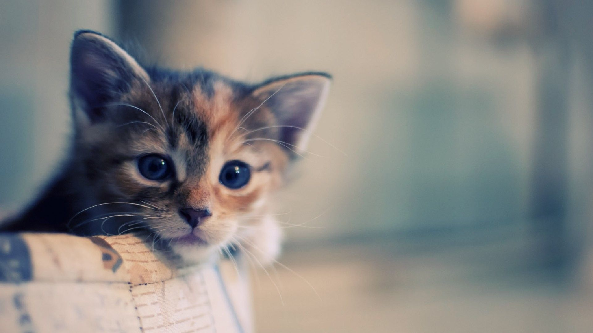

What if I want to get a Cat?
There are several questions you should ask yourself before getting a Cat
1. Do you have time to look after a cat?
A kitten can be a cheerful addition to a home, but it will grow up, so the decision to get a cat is a long term commitment.
While many people believe it's easier to have a cat instead of a dog, cats still require plenty of attention and support.
Other things that will affect the kind of care and support your cat needs will include whether you choose to get a kitten or an
older cat as kittens will require more nurturing, teaching and regular feeding than adult cats; whether you want a pedigree or a
‘moggie’, and whether you go to a breeder or a rescue centre as some rescue cats may have had traumatic experiences that require
greater consideration at the outset.
The way a cat acts and responds depends on a combination of its genetic make-up as well as the experiences it has been exposed to.
A kitten learns most of its socialising skills in the period up to eight weeks old, so giving them enough time and attention
in the early weeks is vital.

2. Would a cat or kitten fit in with your routine?
Any animal will change your lifestyle, hopefully in unilaterally positive ways. However, some things in your routine may be immovable and it is worth considering how they will work or adapt with the arrival of a cat or kitten.
Ask yourself
- Do you have children?
This might impact the type of cat you choose to get as some will be less suited to young children than others. - Do you have other pets in the home and how might they react to the new addition?
Introducing a newcomer to established pets can be tricky. This will take time and patience. Total acceptance can take several months, or may not ever occur. - Do you have outdoor space or will your cat live solely indoors?
- Do you work full time and if so, what will happen to the cat when you’re not in the house?
- Will you be able to appropriately adapt your home to make it cat-friendly?
- How much do you travel?
If you are going to go away without your cat, think carefully about the various options for its care. - Can you financially support your cat’s needs including pet insurance, food, vets bills and potential grooming and boarding?
These questions will not only influence whether your home and lifestyle is conducive to having a happy and healthy cat, but also what type of cat may be best suited to you.
3. Is your home safe for a cat or a kitten?
A cat’s home is an important part of its well-being. After settling in to its new home, a kitten has everything to discover. Let them explore and get their bearings at their own pace but be sure to check for any potential dangers.
Also, make sure there is a quiet space the cat can retreat to, especially when it first comes home, so he/she can gradually get to know her new territory and family over the next few days.
Things you can do to reduce stress in the home include:
- Provide your cat with a dedicated eating area. This must be well away from the litter tray, ideally away from a noisy areas as cats like to have calm spaces to eat.
- Make sure they have a litter tray, again located in a quiet area. This must be in a permanent location which is easily accessible to the cat, and well away from food and water bowls.
- Ensure they have dedicated space for play, hunting, climbing and scratching.
- Provide your cat with their own personal sleeping space.
4. Are there any dangers in your home?
There are a number of things that can pose a danger to a cat or kitten both inside and outside the home, including:
- Electrical wires or power cords.
- Easily accessible household chemicals, cleaning products and medicines.
- Exposed hot plates.
- Balconies.
- Toxic or poisonous plants such as: Cyclamen, Holly, Mistletoe, Wisteria, Dieffenbachia, Philodendron, Azalea, Rhododendron, Jerusalem Cherry, Oleander, Poinsettia, Ivy, Aucuba Japonica, Sweet pea and Ficus trees.